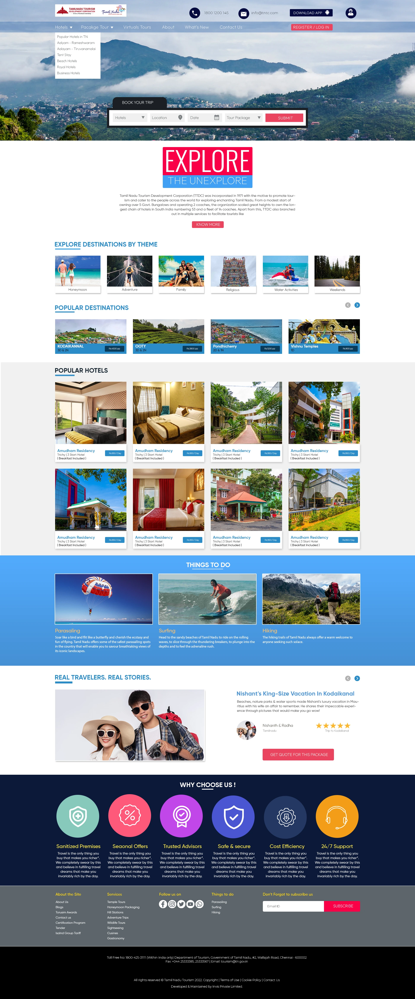
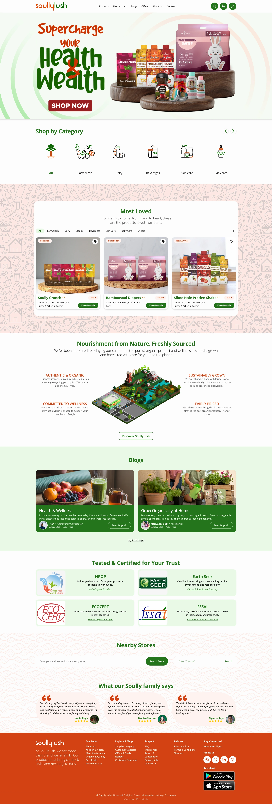
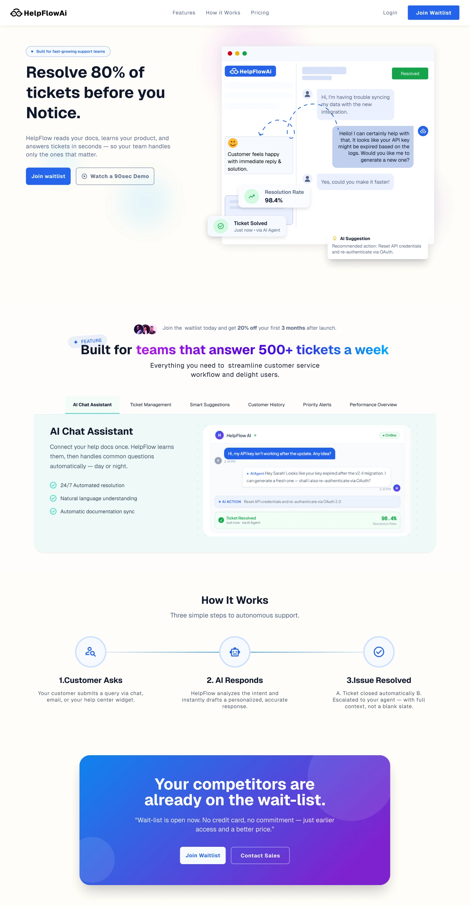
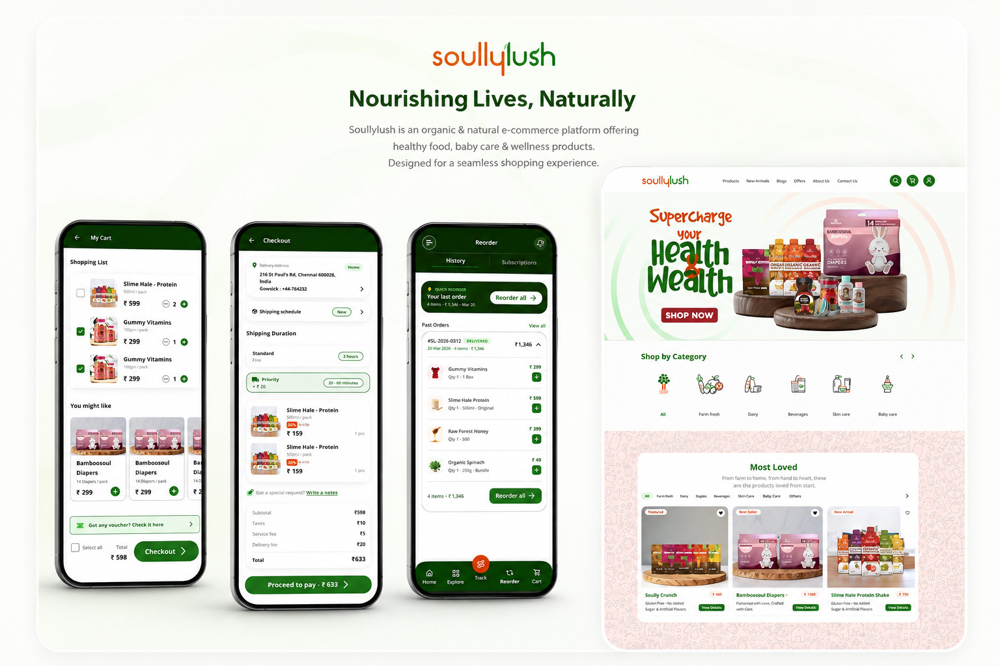
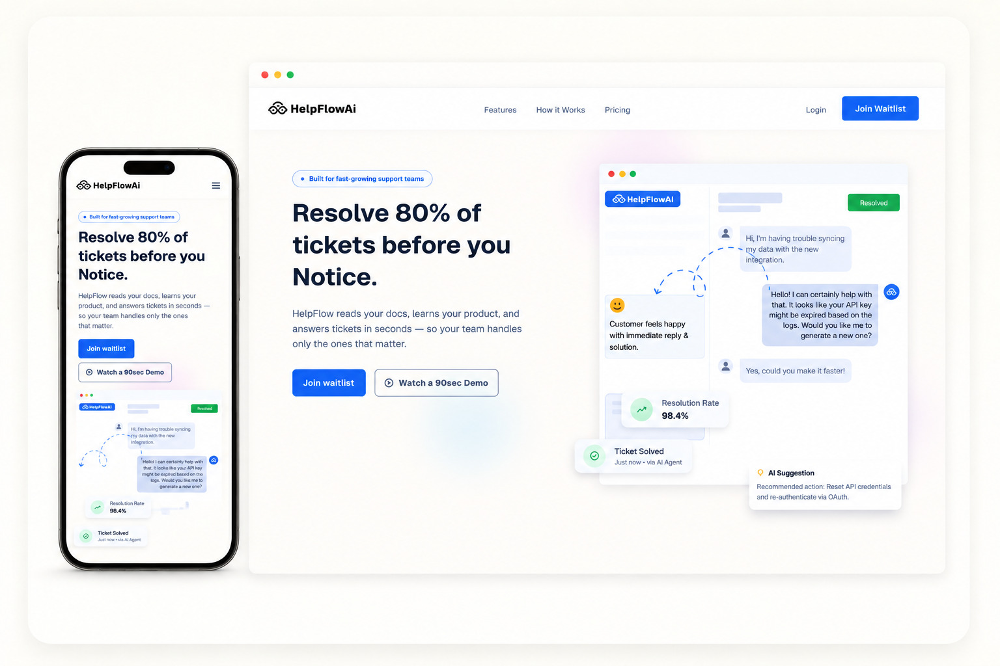

Product & UX Designer - Chennai
Designing products that convert, not just look the part - across web, mobile, and dashboard surfaces.
Hiring for product or UX? Here's the 90-second version below - design systems, sole-designer ownership, zero filler.



The Value Add
Not another set of pretty screens - a way of thinking that holds up under real constraints.
I find the real issue first - cognitive load, a skill gap, a structural problem - before a single screen gets touched. Fewer redesigns later, because the first one solved the right problem.
Every project leaves behind tokens, components, and documented states - not one-off mockups. Your team can build on it after I'm gone.
UX copy in my work is built to move someone toward a choice - clear microcopy, honest empty states, no filler. Words are a design material, not an afterthought.
Selected Work


FAQ
You have the chance to know design process..
User-centered isn't a phase, it's a check I run against every decision. I measure success against actual behavior, not just what people say in interviews or surveys - intent and action often disagree. I also test for cross-audience interference: a fix that helps one user group can quietly create friction for another, so nothing ships until I've checked it against both.
About
I'm a Chennai-based product and UX designer, working across client projects, while mentoring design students at Image Creative Education - using their real briefs as the teaching ground.
"A design that only looks strong hasn't done its job yet - colour, type, and structure exist to move someone toward a decision."
I rarely hand students a solution. I ask the question that gets them to find it themselves - because that's the only way the thinking actually sticks. It's the same instinct I bring to my own work: a SaaS onboarding flow, a farmer's wellness dashboard, a state tourism platform - different problems, same underlying question: what does this person need to feel and understand to take the next step?
Off the Clock
Design isn't the only thing that keeps me moving - most weekends I'm either on a volleyball or cricket court, or a few chapters into a book I've read before.
"The best resets aren't screens - they're a court, a trail, or a good story."
I go back to childhood favourites often - The Mouse and the Motorcycle and the whole Narnia series - alongside whatever I'm reading new. And whenever I can, I get out: a trip, a trail, anywhere that puts me next to nature instead of a screen.